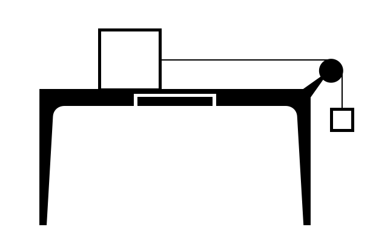
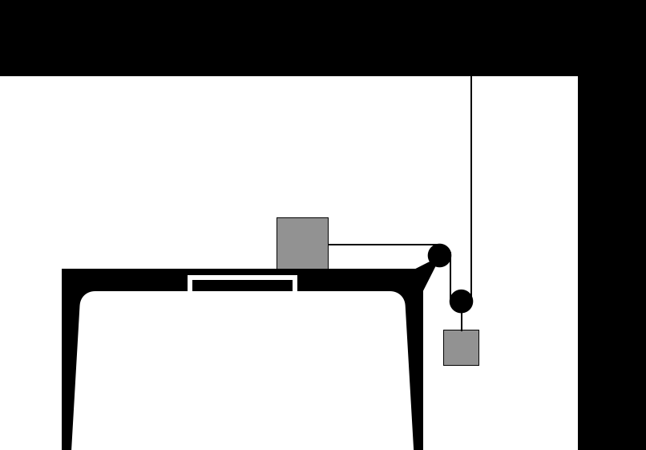

C5.X Problems#
Problem C5.1
A car accelerates from rest at a constant rate of 3.0 m/s\(^2\) for 10.0 seconds. Calculate its final velocity and the distance it travels during this time.
Solution C5.1
Solving Methodology
We will be using the defining relationship between acceleration and change in velocity, followed by one of the derived equations of kinematics.
Solution
From \(\vec{a}_{av} = \frac{\Delta\vec{v}}{\Delta t} \) we have for a single component, say x:
Inserting our numbers:
Using Toricelli’s equation of kinematics:
we can solve for the distance travelled:
The later, we could also have found by using \(v_{av,x} = \frac{\Delta x}{\Delta t}\) and recognizing that the average velocity over the 10.0 s is 15 m/s.
Problem C5.2
A UVU rocket is launched vertically upward. After the engine burn-out the speed of the rocket is 740.0 m/s. How high above the burn-out altitude is the speed 120.0 m/s?
Solution C5.2
Solving Methodology We will be using Toricelli’s equation of motion (using z as the vertical coordinate):
Solution
If we let upward be positive direction, then the acceleration of the rocket after the burn-out is \(a_z = -9.81~\textrm{m/s}^2\). Solving for our displacement and inserting our numbers:
Problem C5.3#
A block with a mass of 2.5 kg is being pulled across a horizontal surface. The coefficient of friction between the block and the surface is 0.20. The pulling force is 12 N and parallel to the surface.
Use Newton’s 2nd law to find the acceleration of the block.
If the block starts from rest, what is the speed of the block after being pulled a distance of 5.0 m?
How long time did it take to pull it a distance of 5.0 m?
Show code cell source
import sympy as sym
#part 1
ax = sym.Symbol('ax')
fn = sym.Symbol('fn')
m = 2.5
fp = 12
g = 9.81
mu = 0.20
eq1 = m*ax -fp + mu*fn
eq2 = fn - m*g
sol = sym.solve((eq1,eq2),(ax,fn))
print(sol)
Show code cell output
{ax: 2.83800000000000, fn: 24.5250000000000}
Show code cell source
import sympy as sym
#part 2
vx = sym.Symbol('vx')
v0x = 0.0
ax = 2.838
dx = 5.0
eq = vx**2 - v0x**2 - 2*ax*dx
sol = sym.solve(eq,vx)
print(sol)
Show code cell output
[-5.32728824074688, 5.32728824074688]
Show code cell source
import sympy as sym
#part 3
dt = sym.Symbol('dt')
v0x = 0.0
vx = 5.327
ax = 2.838
eq = dt - (vx - v0x)/ax
sol = sym.solve(eq,dt)
print(sol)
Show code cell output
[1.87702607470049]
Problem C5.4#
A 2.0 kg box is being pulled up a 15\(^\circ\) incline by a 15 N pulling force that is parallel to the incline. The coefficient of friction between the box and the surface is 0.25.
Use Newton’s 2nd law to find the acceleration of the block.
If the incline is 12 m long and the box starts from rest, what is its speed at the top?
How long time did it take to pull the box from the bottom to the top of the incline?
What is the work done by the diligent student worker who pulled the box?
Show code cell source
import sympy as sym
import numpy as np
#part 1
ax = sym.Symbol('ax')
fn = sym.Symbol('fn')
m = 2.0
fp = 15
g = 9.81
mu = 0.25
angle = 15.0
eq1 = m*ax -fp + mu*fn + m*g*np.sin(angle*np.pi/180.0)
eq2 = fn - m*g*np.cos(angle*np.pi/180.0)
sol = sym.solve((eq1,eq2),(ax,fn))
print(sol)
Show code cell output
{ax: 2.59205207857033, fn: 18.9514647117915}
Show code cell source
import sympy as sym
#part 2
vx = sym.Symbol('vx')
v0x = 0.0
ax = 2.592
dx = 12.0
eq = vx**2 - v0x**2 - 2*ax*dx
sol = sym.solve(eq,vx)
print(sol)
Show code cell output
[-7.88720482807439, 7.88720482807439]
Show code cell source
import sympy as sym
#part 3
dt = sym.Symbol('dt')
v0x = 0.0
vx = 7.887
ax = 2.592
eq = dt - (vx - v0x)/ax
sol = sym.solve(eq,dt)
print(sol)
Show code cell output
[3.04282407407407]
Show code cell source
fp = 15.0
dx = 12.0
work = fp*dx
print(work)
Show code cell output
180.0
Problem C5.5#
Consider two blocks A and B connected by a massless rope and a massless disk as shown in the Figure.
Block A has a mass of 2.0 kg and is placed on the table top. The coefficient of kinetic friction between the block and the table surface is 0.30. Block B has a mass of 1.5 kg. The blocks are held in place until \(t = 0\) s when they are released.
Draw a free-body-diagram of each block.
What is an equation of constraint in this problem?
Find the acceleration of block B using Newton’s 2nd law.
If the initial distance between Block B and the floor is 1.2 m, how long time does it take to reach the floor?
What is the speed of block B right before it hits the floor?
What should the static friction be to prevent the system from accelerating?
Show code cell source
import sympy as sym
#values giving
mA = 2.0
mB = 1.5
mu = 0.30
g = 9.81
#unknowns
a = sym.Symbol('a')
fn = sym.Symbol('fn')
ft = sym.Symbol('ft')
#coupled equations
eq1 = mA*a - ft + mu*fn
eq2 = fn - mA*g
eq3 = mB*a + ft - mB*g
sol = sym.solve((eq1,eq2,eq3),(a,fn,ft))
print(sol)
Show code cell output
{a: 2.52257142857143, fn: 19.6200000000000, ft: 10.9311428571429}
Show code cell source
import sympy as sym
dy = -1.2
ay = -2.52257
v0y = 0.0
t = sym.Symbol('t')
eq = dy - v0y*t - 0.5*ay*t**2
sol = sym.solve(eq,t)
print(sol)
Show code cell output
[-0.975402821669441, 0.975402821669441]
Show code cell source
import sympy as sym
dt = 0.9754
ay = -2.52257
v0y = 0.0
vy = sym.Symbol('vy')
eq = vy - v0y - ay*dt
sol = sym.solve(eq,vy)
print(sol)
Show code cell output
[-2.46051477800000]
Show code cell source
import sympy as sym
#values giving
mA = 2.0
mB = 1.5
mu = 0.30
g = 9.81
a = 0.0
#unknowns
fs = sym.Symbol('fs')
fn = sym.Symbol('fn')
ft = sym.Symbol('ft')
#coupled equations
eq1 = mA*a - ft + fs
eq2 = fn - mA*g
eq3 = mB*a + ft - mB*g
sol = sym.solve((eq1,eq2,eq3),(fs,fn,ft))
print(sol)
Show code cell output
{fs: 14.7150000000000, ft: 14.7150000000000, fn: 19.6200000000000}
Problem C5.6#
A UVU rocket had a little mishap and instead of being launched near vertically, it launched at an angle of 40.0\(^\circ\) with respect to the vertical at 32 m/s and the parachute failed to deploy. Assume no air drag.
What was the maximum altitude above the launch point?
How long time after launch did it take to reach peak altitude?
How far away from the launch point did the rocket land?
How long time did it take the rocket to land measured from the launch time?
Show code cell source
import sympy as sym
import numpy as np
#launch angle is measured from horizontal (and converted to radians)
angle = (90.0 - 40.0)*np.pi/180.0
v0 = 32.0
g = 9.81
#part 1
hpeak = sym.Symbol('hpeak')
eq1 = hpeak - (v0**2)*(np.sin(angle)**2)/(2*g)
sol1 = sym.solve(eq1,hpeak)
print('Peak Altitude = '+str(sol1))
#part 2
tpeak = sym.Symbol('tpeak')
eq2 = tpeak - v0*np.sin(angle)/g
sol2 = sym.solve(eq2,tpeak)
print('Time to peak altitude = '+str(sol2[0]))
#part 3
r = sym.Symbol('r')
eq3 = r - (v0**2)*(np.sin(2*angle)**2)/g
sol3 = sym.solve(eq3,r)
print('Range = '+str(sol3[0]))
Show code cell output
Peak Altitude = [30.6273122816243]
Time to peak altitude = 2.49881979406802
Range = 101.235741268337
Problem C5.7#
An attempted UVU rocket launch turned into a missile testing event. The spectacular rocket was launched at an angle of 55.0\(^\circ\) with respect to the vertical and a launch velocity of 255 m/s. A distance of 4150.0 m away was a moutain with a slope of 12.0\(^\circ\). What vertical distance up the mountain did the rocket land?
Show code cell source
import sympy as sym
import numpy as np
#launch angle in radians
launch_angle = (90.0-55.0)*np.pi/180.0
v0 = 255.0
#launch coordinates
x0 = 0.0
y0 = 0.0
g = 9.81
L = 4150.0
slope = 12.0*np.pi/180.0
#unknowns
ym = sym.Symbol('ym')
xm = sym.Symbol('xm')
t = sym.Symbol('t')
#xm horizontal distance along the mountain
#total horizontal distance from launch point
x = L + xm
y = ym
#equations of projectile motion
eq1 = x - (x0 + v0*np.cos(launch_angle)*t )
eq2 = y - (y0 + v0*np.sin(launch_angle)*t - 0.5*g*t**2)
#three unknowns but only two equations.
#Third equation comes from the relationships between mountain coordites
eq3 = (ym/xm) - np.tan(slope)
sol = sym.solve((eq1,eq2,eq3),(ym,xm,t))
print(sol[1])
print('Vertical distance = '+str(sol[1][0]))
Show code cell output
(331.951719382340, 1561.71005389930, 27.3439627144062)
Vertical distance = 331.951719382340
Problem C5.8#
Consider two blocks A and B connected by a massless rope and two massless disks as shown in the Figure.
Block A has a mass of 2.0 kg and is placed on a frictionless table top. Block B has a mass of 1.5 kg. The blocks are held in place until \(t = 0\) s when they are released.
Draw a free-body-diagram of each block.
What is an equation of constraint in this problem?
Find the acceleration of block B using Newton’s 2nd law.
If the initial distance between Block B and the floor is 1.2 m, how long time does it take to reach the floor?
What is the speed of block B right before it hits the floor?
Show code cell source
import sympy as sym
import numpy as np
#part 3
#masses of blocks
mA = 2.0
mB = 1.5
g = 9.81
#unknowns
aAx = sym.Symbol('aAx')
aBy = sym.Symbol('aBy')
fTA = sym.Symbol('fTA')
fTB = sym.Symbol('fTB')
#coordinate system steup:
# x positive to the right
# y positive downwards
#N2 block A
#x direction
eq1 = mA*aAx - fTA
#y direction for block A is not needed to solve the problem
#N2 block B
#y direction
eq2 = mB*aBy + fTB - mB*g
#N2 disk (massless)
#eq3 = mD*aDy + 2*fTA - fTB - mD*g if not massless
eq3 = 2*fTA - fTB #since it is massless
#Equation of constrain for long rope gives us
#the accelerations of the two objects are
eq4 = aAx - 2*aBy
sol1 = sym.solve((eq1,eq2,eq3,eq4),(aAx, aBy, fTA, fTB))
print('Part 3: '+str(sol1))
#part 4
y0 = 0.0
y = 1.2
v0y = 0.0
aBy = 1.5489
t = sym.Symbol('t')
eq5 = y - y0 - v0y*t - 0.5*aBy*t**2
sol2 = sym.solve(eq5,t)
print('Part 4: Time = '+str(sol2[1]))
#part 5
t = 1.245
vy = sym.Symbol('vy')
eq6 = vy - v0y - aBy*t
sol3 = sym.solve(eq6,vy)
print('Part 5: speed = '+str(sol3[0]))
Show code cell output
Part 3: {aAx: 3.09789473684211, aBy: 1.54894736842105, fTA: 6.19578947368421, fTB: 12.3915789473684}
Part 4: Time = 1.24478380955082
Part 5: speed = 1.92838050000000